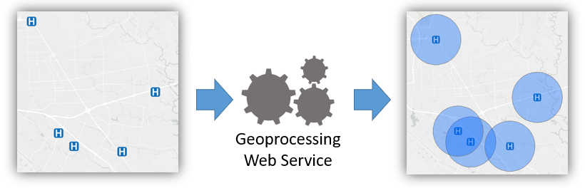
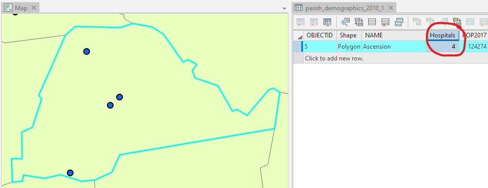
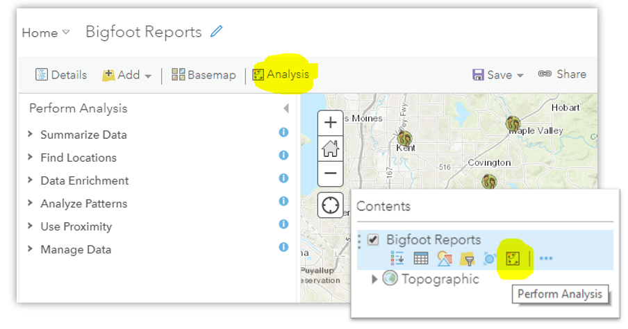
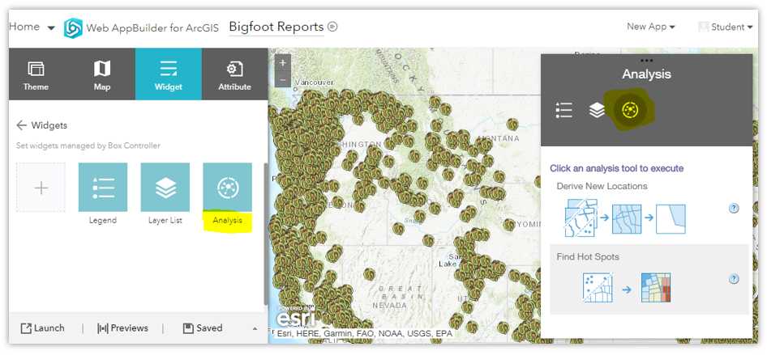

Geoprocessing
Table of Contents
- Introduction
- Geoprocessing
- Geoprocessing as a web service
- ArcGIS Online
- What can be analyzed
- Summary
Terms: geoprocessing, geoprocessing services, Web Processing Service, Web Coverage Processing Service
Introduction
In addition to storing, sharing, and mapping data, Web GIS can perform analysis. This can be as simple as drawing a 2-mile buffer around a hospital, or more complex operations like looking for crime hotspots.
 Figure 1. A geoprocessing tool receives an input layer or layers, such as points, and outputs another layer based on the calculations performed by the tool. In this diagram, the tool receives the locations of hospitals as a point layer and responds with a new layer of polygons representing a 2-mile radius around the hospital.
These analysis tools can be made available online as web services. In Assignment 2, we created a very simple geoprocessing web service to calculate the distance between two latitude/longitude coordinate pairs.
This lesson will prepare you to use more sophisticated geoprocessing tools in ArcGIS Online and Google Earth Engine and understand how they work.
Geoprocessing
As mentioned in the introductory lessons of this course, one of the main functions of a geographic information system is to perform calculations related to distance. These calculations are possible because of numeric coordinate systems, such as latitude and longitude. Coordinate systems give us a way to precisely describe a location on Earth, and they give GIS software the numbers needed for the math that goes into spatial analysis.
Geoprocessing in GIS is the analysis or manipulation of data layers. Geoprocessing can be performed using geoprocessing tools in GIS software. These tools can be made available online as web services, referred to as geoprocessing services.
The buffer operation is one simple example. In its most basic form in GIS software, a buffer tool will accept as input a layer (points, lines, or polygons) and a distance parameter (how far the buffer extends from each feature) and produce as output a new polygon layer, which resembles a more plump version of the original layer.
 Figure 2. A buffer is the area within a specified distance of a feature. In the case of point features, the buffer distance is the radius of the circle centered on the point.
Figure 2. A buffer is the area within a specified distance of a feature. In the case of point features, the buffer distance is the radius of the circle centered on the point.
The figure below shows a common tool that counts the number of features within another feature; in this case, hospitals (points) within a parish (polygon). This is a summarize within tool, and in addition to counting features it can typically perform statistics on an attribute of the summarized layer. If the hospitals layer had a “beds” attribute, the summarize tool could tell us the average, total, minimum, or maximum number of beds in the parish’s hospitals.
 Figure 3. Another example, the “summarize within” tool, tells us something about the relationship between two layers, such as how many features from one layer are located within the boundaries of a feature from another layer.
Geoprocessing as a web service
A geoprocessing tool could, as another example, take two addresses as input, and output the shortest or fastest route between the two. In that sense, you could consider Google Maps directions a geoprocessing tool. Google makes this service available as a geoprocessing service for use in your own applications through the Google Maps Directions API. Think of the “from” and “to” addresses as an input layer of points (converted to lat/lon by Google’s geocoding service), and the output layer is a line along the road network representing the optimal route.
Our simple distance calculation web service on CodeSandbox for Assignment 2 was much less complex but the idea is the same. Our web service received input locations and used an algorithm to compute the distance between them, returning that distance to the user in the web service response.
Geoprocessing services carry out their computations on the servers where they are installed, meaning client devices using websites and apps do not require a high capacity for storage and computing power.
ArcGIS Online provides numerous geoprocessing services. They can be used in maps and apps created on ArcGIS Online, or they can be used through the ArcGIS JavaScript API in your own websites and apps. ArcGIS Enterprise lets you create your own geoprocessing services that can be published to ArcGIS Server in basically the same way that feature layers are published.
There are also open standards for web services. There is the OGC Web Processing Service (WPS) open standard for use with Web Feature Service (WFS) layers of points, lines, and polygons, and the Web Coverage Processing Service (WCPS) open standard for use with Web Coverage Service (WCS) layers of images.
In this course, we will not create our own geoprocessing services, unless you count the distance calculator on CodeSandbox. Instead, we will use ArcGIS Online and Google Earth Engine to create web apps that take advantage of existing geoprocessing services. Earth Engine will be introduced in more detail in a later lesson.
ArcGIS Online
ArcGIS Online provides two ways to use their geoprocessing tools through the website interface. The analysis tools are not for use in public apps and they consume ArcGIS Online credits.
One way is through the Map Viewer. There is a Perform Analysis button that will let you browse through the available tools. There is also a button among the icons under each layer name in the table of contents of the map, if the layer is one that can be analyzed. The Map Viewer is appropriate for more experienced GIS users who know how to add layers to a map and choose the right analysis tools for their objectives.
 Figure 4. The buttons to perform analysis on a layer in ArcGIS Online.
Another option in ArcGIS Online is to create a web app to which you, the app designer, add specific tools tailored to your audience, the app users. Your app can have layers preloaded on the map and buttons to run preselected tools. Showing only the necessary information and tools simplifies the app and makes it easier to use, which means more people can use it without GIS expertise.
 Figure 5. The analysis widget in ArcGIS Web AppBuilder allows you to give users access only to the tools they need for a more simplified app.
What can be analyzed?
Certain analysis tools only work with certain types of layers and data; not every tool can be used for every dataset. Here are some considerations.
- The analysis tools in this lesson only work with vector layers of points, lines, and polygons. There are other kinds of tools for image analysis (next lessons).
- Analysis tools need access to geometry data and attributes, so layers where this is absent will not work, including tile layers (tiles are just compressed images of layers and do not contain the original data of the source dataset).
- Some tools are made to work only with points (e.g., “Aggregate Points”), some only with polygons (“Find Centroids”).
- Some tools only work with certain attribute data (“Find Similar Locations” will only work with two layers that have attributes with similar values).
Summary
This lesson provides a quick introduction to geoprocessing before you use the tools in the assignment. There is much more to learn about geoprocessing in GIS, however, and if you would like to know more about the specific tools in ArcGIS Online, see the Perform Analysis documentation.
Geoprocessing tools for spatial analysis are a major use of GIS software, and the functionality has been extended to Web GIS via geoprocessing services. Much like how data layers can be shared as web services, geoprocessing functions can also be shared as web services so that developers can incorporate those functions in their own applications without having to code them from scratch. For example, if your application needs to give users directions from one address to another, wouldn’t it be a pain to have to come up with a way to do that from scratch? It would be much easier to connect your app with the Directions API and let Google’s servers do the work for you.
Without having to write any code, ArcGIS Online allows you to create apps with access to geoprocessing tools, with some limitations on what layers can be processed, and at a cost to your ArcGIS Online credits.
TopBack to Lessons